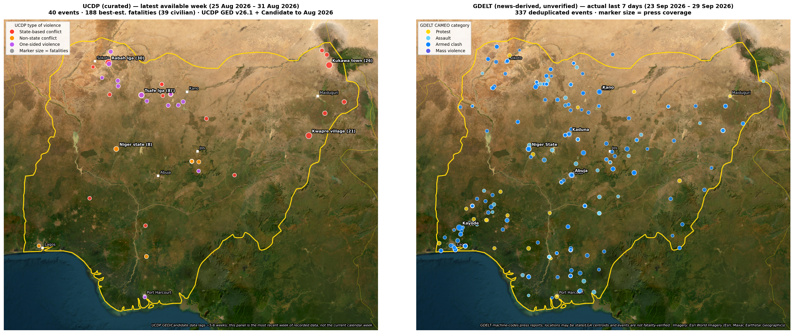

RBM GLOBAL · OPEN-SOURCE SECURITY AND HUMANITARIAN OVERVIEW
Nigeria — Weekly Threat Brief
Reporting window: 21–27 September 2026. Issue date: 28 September. Catch-up edition published 30 September 2026. This edition covers selected verified source reports and humanitarian context. It is not an exhaustive incident register; historical issues remain in the archive.
Overview
The reviewed reporting points to continuing civilian exposure to violence in Plateau, alongside official reports of arrests in Yobe and the recovery of abducted people in Benue. The evidence is uneven and mainly attributable reporting; it does not support a reliable nationwide weekly casualty total or a claim that unreported areas were quiet.
Reviewed developments
Plateau: continued civilian harm and disruption
Reporting during the week describes further violence despite curfew restrictions. A 23 September Channels report includes differing headline, police and community casualty figures; this brief therefore does not combine them into a single death toll. A 26 September TheCable report, attributed to security sources via Zagazola Makama, describes two residents injured and damage to homes in a separate incident. These accounts establish reported disruption, but do not establish a complete statewide total. [2, 3]
Yobe: arrests reported by the Army
Channels reported an Army statement announcing the arrest of four suspected terrorists following an operation on 21 September. This is an attributed official claim, not a judicial finding or an independently verified measure of changes in the wider threat. Suspects are not treated as convicted offenders. [1]
Benue: six abducted people reported recovered
Premium Times reported a Joint Task Force statement that six kidnapped people were rescued on 25 September. The report describes people abducted in neighbouring Taraba. It is evidence of a reported recovery, not proof that abductions or travel disruption have ceased. The source is a task-force statement carried by the newspaper. [4]
Post-window follow-up: public concern in Plateau
On 28 September the Nigerian Bar Association branches in Plateau called for action over repeated attacks and loss of public confidence. This is included as a dated follow-up, outside the 21–27 September event window. It is a civil-society statement, not a new incident count or an opinion poll. [5]
Coverage and confidence
| Area | Evidence reviewed | Confidence boundary |
|---|---|---|
| Plateau | Multiple reports of attacks; later NBA statement | Different incidents and inconsistent totals |
| Yobe | Army arrest statement carried by Channels | Official claim; no independent outcome check |
| Benue / Taraba | JTF recovery statement carried by Premium Times | Official claim; not a regional trend |
| Other states | No comprehensive incident review in this edition | Do not infer no incidents |
Map and data status

What the map contains
The refreshed interactive map contains 2,183 UCDP records dated September 2024–August 2026 and 1,972 collapsed GDELT records dated 24 August–29 September 2026. All daily GDELT input files through 29 September were ingested. UCDP GED 26.1 and Candidate through August 2026 were checked; no newer Candidate month was available to the updater.
Different dates, different meanings
The UCDP panel shows its latest available week, 25–31 August: 40 events and 188 best-estimate fatalities, including 39 civilian fatalities. The GDELT panel shows 23–29 September: 337 machine-coded records. That window extends beyond this brief’s reporting week. The two panels must not be added or treated as a like-for-like trend comparison.
Reporting activity is not verified violence
GDELT extracts events from news and may misclassify reports, repeat incidents, or use imprecise locations. Its marker size reflects press coverage; it is not a fatality count or measured public sentiment. UCDP is curated but delayed and subject to revision.
Humanitarian background
UNFPA’s August situation report describes displacement and disrupted access to essential services. It provides background to the continuing protection concerns, not a newly measured September weekly total. Updated local needs and service availability require current humanitarian reporting. [6]
Limitations
No new representative polling or independently verified X sample was obtained for this catch-up edition. Existing sentiment assessments are explicitly labelled as carried forward from 27 September, with underlying source dates spanning May–September. Reported arrest and rescue claims have not been independently corroborated here. Conflicting casualty figures are left unresolved rather than combined. Reports outside the named places were not exhaustively reviewed; absence from this brief is not evidence of safety.
Sources
- Channels Television, 23 September: Four suspected terrorists arrested in Yobe
- Channels Television, 23 September: Plateau attacks: police officer, five others killed despite curfew
- TheCable, 26 September: Troops repel terrorist attack in Plateau
- Premium Times, 27 September: Army rescues six abductees in Benue
- Channels Television, 28 September — after the reporting window: NBA demands stronger security measures as Plateau attacks persist
- UNFPA, August reporting period — background: Situation Report: Nigeria Humanitarian Crisis, 1–31 August 2026